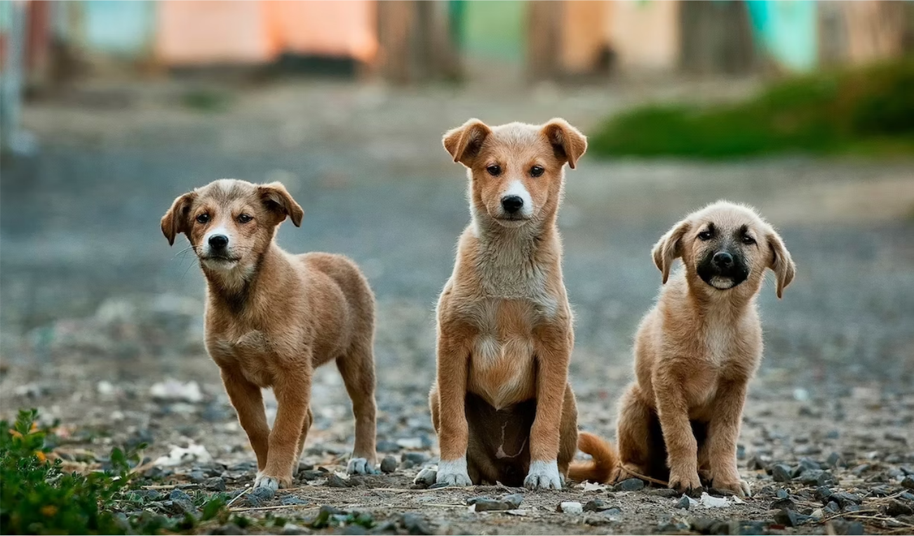

WE SAVE ANIMALS WELFARE TRUST (WSA)
Being humans, let's be the voice for the voiceless.
Being humans, let's be the voice for the voiceless.

WSA believes in multiplying its efforts through collaboration & partnerships that bring together government, non-government, and corporate in a collaborative process for socio-economic development, improving animal rescue their health, and survival. WSA puts a lot of emphasis on upgrading the skills and capacities of its staff. For this purpose, need-based training is regularly organized.
A humane and compassionate future for every animal friend.To rescue and rehabilitate animals and nature in distress in our immediate environment. To provide free medical care, shelter and lifetime care for those animals that cannot be rehabilitated.
Our Mission is to serve the animals who are needy and have impeccable progress on activities and successfully obtain a better life for them.
It started for Praveen in 2013, when he rescued a kitten with a spinal injury. He nursed it at home, but it passed away after a week, leaving Praveen to wonder what he could do to help numerous animals like this, that suffer in silence. So he started by rescuing injured animals, and keeping them at home. Soon, as the number of rescues increased, he started looking for temporary shelters to house them. Eventually, the news of his rescue got around and he started attending to approximately 4-5 cases in a day were People Use to tag him in social media Like Facebook etc. He took the help of Dr. Girish from Blue Cross and Dr. Lohith frm Maruthi pet clinic and started an account in their respective clinics, so that injured animals could be attended to, without a delay due to the finances. So as the number of rescues went up, so did the bill amount in the clinics. But that did not deter Praveen. The word spread, and Praveen, who was initially contacted for rescues only around South Bangalore, started getting calls for help for cases in Mysore, Mandya, Chikmagalur Hosur etc. To manage things better, Praveen started a WhatsApp group With Just 6 People And started attending To this cases full-time. He had no option but to give up his job, financial help was low, but with his family standing behind him, praveen kept doing whatever he could for the animals.
GIVE US A LENDING HAND IN SUPPORTING THE RESCUED ANIMALS!
SAVING ONE PET WON'T CHANGE THE WORLD, BUT WILL CHANGE THEIR WORLD FOREVER
HELP US IN SUSTAINING THIS TRUST FOR THE BETTERMENT OF ANIMALS!
VOLUNTEER IN MAKING ANIMALS HAPPY!
AT A GLANCE
???
RESCUED
???
VACCINATED
???
STERLIZED
???
ADOPTED